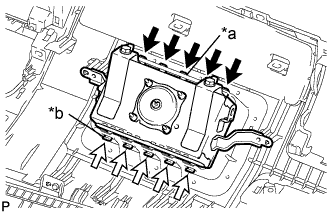
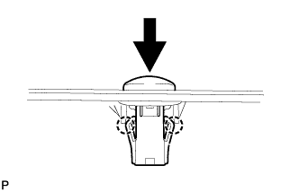
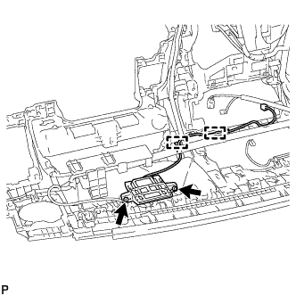

ЗАЩИТНАЯ НАКЛАДКА ПАНЕЛИ ПРИБОРОВ > ПОВТОРНАЯ СБОРКА |
| 1. УСТАНОВИТЕ ВЫКЛЮЧАТЕЛЬ ЗАЖИГАНИЯ (для моделей с системой посадки и запуска) |
Введите в зацепление 2 захвата, чтобы установить выключатель зажигания.
Подсоедините разъем.
| 2. УСТАНОВИТЕ ПЕРЕДНЮЮ ПОДУШКУ БЕЗОПАСНОСТИ ПАССАЖИРА |
|  |
Введите в зацепление 5 креплений (А).
| *a | Крепление A |
| *b | Крепление B |
Установите переднюю подушку безопасности пассажира и введите в зацепление 5 креплений (В).
Заверните 2 винта.
| 3. УСТАНОВИТЕ ДАТЧИК АВТОМАТИЧЕСКОГО УПРАВЛЕНИЯ ОСВЕЩЕНИЕМ |
|  |
Зацепите 2 захвата, чтобы закрепить датчик.
| 4. УСТАНОВИТЕ АНТЕННУ СИСТЕМЫ НАВИГАЦИИ В СБОРЕ (для моделей с системой навигации) |
|  |
Установите антенну и закрепите ее 2 винтами.
Установите 2 зажима.
| 5. УСТАНОВИТЕ ЖГУТ ПРОВОДОВ ПАНЕЛИ ПРИБОРОВ № 2 |
Для моделей с левосторонним рулевым управлением:
Установите жгут проводов панели приборов № 2, закрепив его 20 зажимами.
Подсоедините 2 разъема.
Для моделей с правосторонним рулевым управлением:
Установите жгут проводов панели приборов № 2, закрепив его 20 зажимами.
Подсоедините 2 разъема.
| 6. УСТАНОВИТЕ ОБЛИЦОВКУ СОПЛА ОТТАИВАТЕЛЯ № 1 |
Установите облицовку сопла оттаивателя № 1 и закрепите ее 6 винтами <A>.
| 7. УСТАНОВИТЕ ВОЗДУХОВОД № 3 СОЕДИНЕНИЯ ОТОПИТЕЛЯ И ВОЗДУХОВОДА С ДЕФЛЕКТОРОМ |
Установите воздуховод № 3 соединения отопителя и воздуховода с дефлектором и закрепите его 2 винтами <A>.
| 8. УСТАНОВИТЕ СОПЛО ОТТАИВАТЕЛЯ В СБОРЕ |
Установите сопло оттаивателя и закрепите его 4 винтами <А>.
| 9. УСТАНОВИТЕ ТРУБОПРОВОД СОПЛА № 1 БОКОВОГО ОТТАИВАТЕЛЯ |
Присоедините 2 захвата, чтобы установить воздуховод бокового сопла оттаивателя № 1.
Вверните винт <A>.
| 10. УСТАНОВИТЕ ТРУБОПРОВОД СОПЛА № 2 БОКОВОГО ОТТАИВАТЕЛЯ |
| 11. УСТАНОВИТЕ ВОЗДУХОВОД № 1 СОЕДИНЕНИЯ ОТОПИТЕЛЯ И ВОЗДУХОВОДА С ДЕФЛЕКТОРОМ |
Установите воздуховод № 1 соединения отопителя и воздуховода с дефлектором и закрепите его 4 винтами <A>.
| 12. УСТАНОВИТЕ ВОЗДУХОВОД № 2 СОЕДИНЕНИЯ ОТОПИТЕЛЯ И ВОЗДУХОВОДА С ДЕФЛЕКТОРОМ |